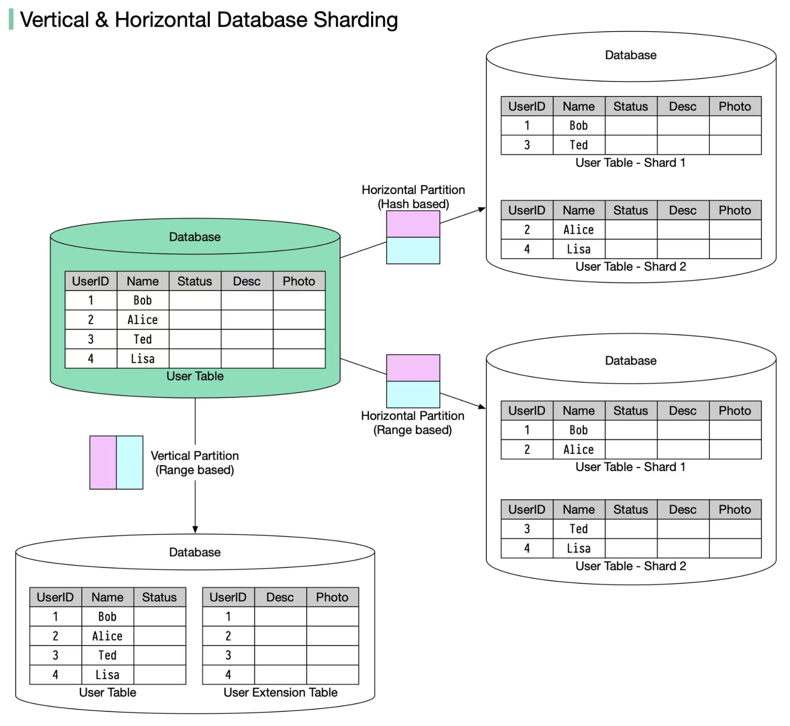

In many large-scale applications, data is divided into partitions that can be accessed separately. There are two typical strategies for partitioning data.
Vertical partitioning: it means some columns are moved to new tables. Each table contains the same number of rows but fewer columns (see diagram below).
Horizontal partitioning (often called sharding): it divides a table into multiple smaller tables. Each table is a separate data store, and it contains the same number of columns, but fewer rows (see diagram below).
Horizontal partitioning is widely used so let’s take a closer look.
The routing algorithm decides which partition (shard) stores the data.
Range-based sharding. This algorithm uses ordered columns, such as integers, longs, timestamps, to separate the rows. For example, the diagram below uses the User ID column for range partition: User IDs 1 and 2 are in shard 1, User IDs 3 and 4 are in shard 2.
Hash-based sharding. This algorithm applies a hash function to one column or several columns to decide which row goes to which table. For example, the diagram below uses User ID mod 2 as a hash function. User IDs 1 and 3 are in shard 1, User IDs 2 and 4 are in shard 2.
Facilitate horizontal scaling. Sharding facilitates the possibility of adding more machines to spread out the load.
Shorten response time. By sharding one table into multiple tables, queries go over fewer rows, and results are returned much more quickly.
The order by operation is more complicated. Usually, we need to fetch data from different shards and sort the data in the application’s code.
Uneven distribution. Some shards may contain more data than others (this is also called the hotspot).